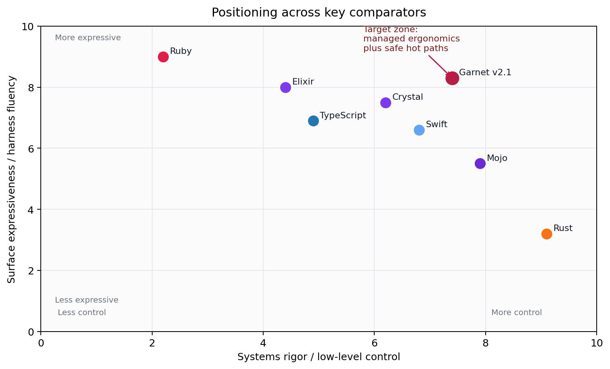
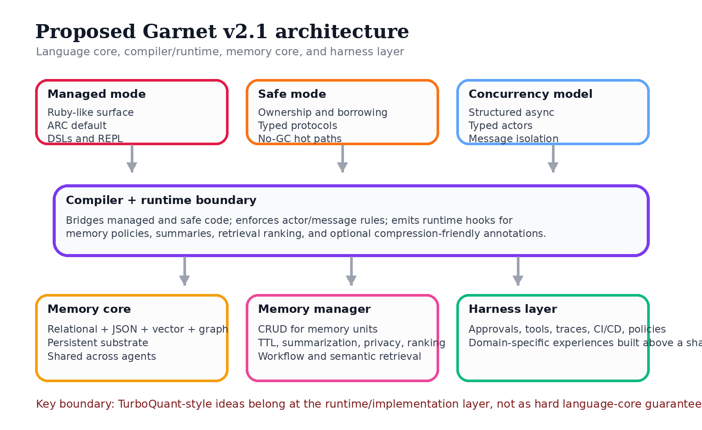
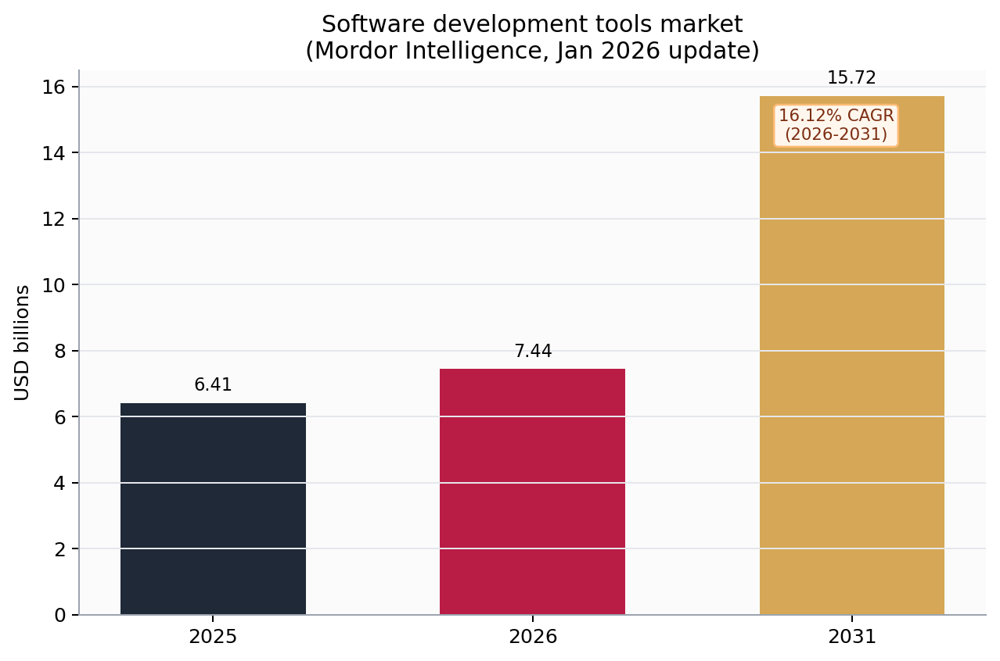

This portal packages the v2.1 pass that followed your Grok consensus review, the original opus prompt, and the April 2026 transcripts on memory engineering and long-context retrieval. The goal of this pass was precision: stronger framing, better boundaries, and presentation-ready deliverables.
Swift is now treated as the production precedent for ARC, actor isolation, and managed-mode seriousness.
Garnet is now framed as a language platform with a shared memory core, a memory manager layer, and domain-specific harnesses.
TurboQuant now motivates runtime direction without being overclaimed as a language-core guarantee.
A dual-mode, agent-native language platform that reconciles Ruby-like expressiveness with Rust-like safety through ARC-by-default managed code, opt-in ownership, typed actors, and first-class memory abstractions anchored to a shared memory core.
That sentence captures the practical shift from the older "Rust and Ruby merged" framing to the sharper v2.1 platform framing. The proposal is narrower, stronger, and more presentation-ready.

Sendable prove that concurrency isolation can be mainstream.
| Garnet is | Garnet is not |
|---|---|
| A dual-mode language-platform proposal | Only a chat interface or coding assistant |
| A shared-memory-core substrate for long-horizon systems | A claim that one runtime tactic should be frozen in syntax |
| A migration-aware platform with Rust, Ruby, and C interop | A guarantee that every market scenario is already settled fact |
| A design with typed actors, memory units, and safe hot paths | A claim to replace every other language immediately |
TurboQuant is important because it sharpens the runtime case for memory-aware systems. It is not useful as an overclaim. The v2.1 documents therefore use it to motivate runtime hooks, implementation flexibility, and platform design rather than to pretend that one compression algorithm is a language guarantee.

The files below are arranged so the package works as a locally browsable folder as well as a downloadable archive.